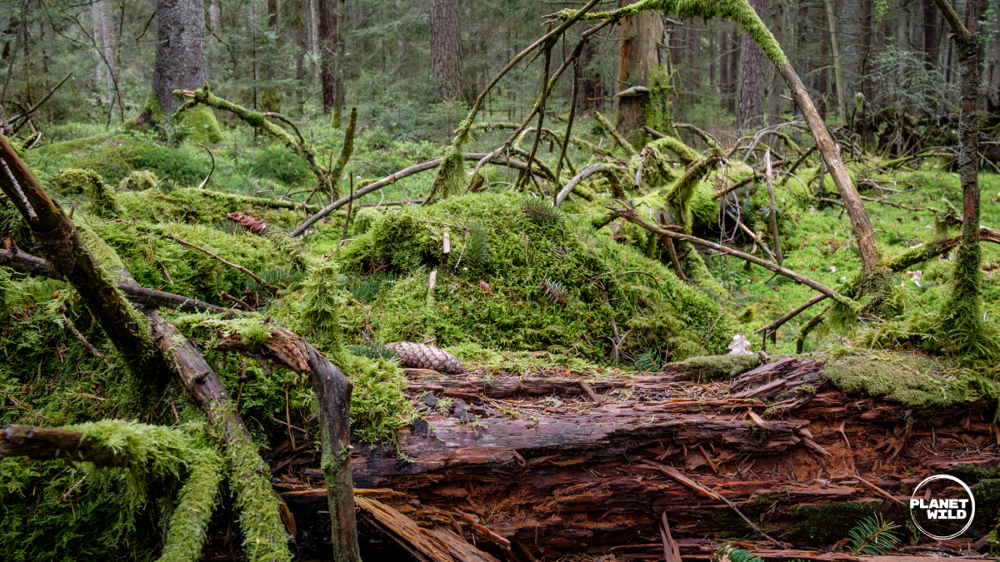
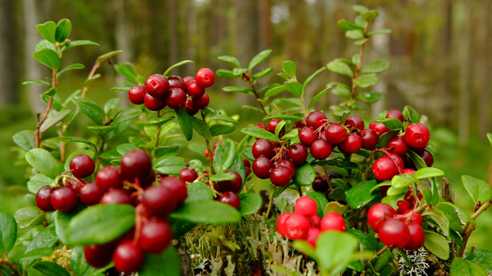
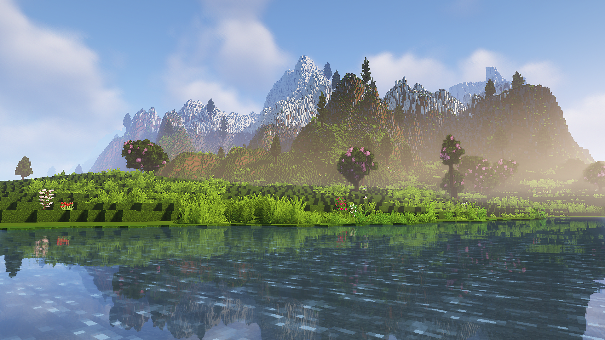
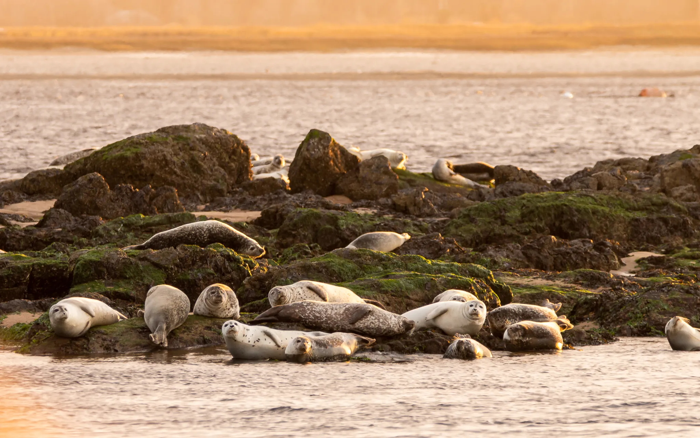
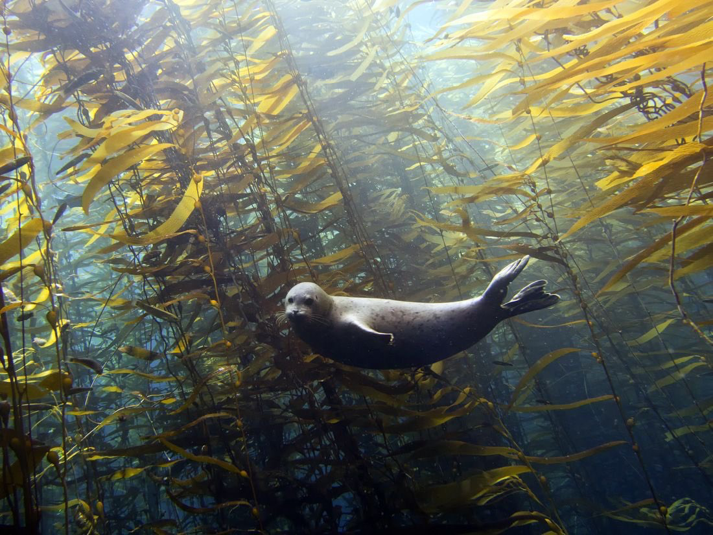
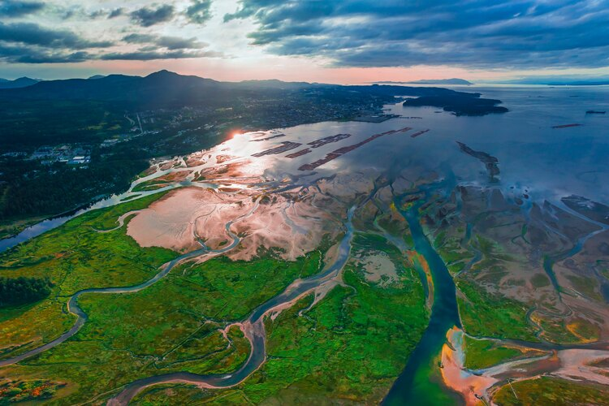
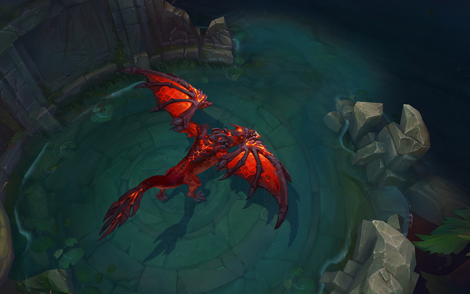

Canopy Cover
Dense canopy helps maintain cool, sheltered understory.

Understory Paths
Brush and logs create pathways for quiet movement.

Seasonal Foods
Berries and fruit supplement their carnivorous diet.
 Seals n Sables
Seals n Sables

Dense canopy helps maintain cool, sheltered understory.

Brush and logs create pathways for quiet movement.

Berries and fruit supplement their carnivorous diet.


Provide structure and feeding grounds for many species.

Critical platform for resting and pupping.

Mixing fresh and salt water can boost food availability.
Learn about more fascinating animals found in different habitats.
| Animal | Interesting Fact |
|---|---|
| Goldfish | Goldfish have a memory span that can last for several months. |
| Penguin | Some penguins can dive over 500 meters deep to hunt for fish. |
| Dragon | Dragons appear in legends across nearly every ancient culture. |
| More interesting animals here! | |

Goldfish are freshwater fish known for their vibrant color and adaptability.

Symbolic creatures found in myths worldwide, representing strength and wisdom. Chris' Favourite Animal

Flightless birds adapted to cold climates, known for their playful behavior.
Want to help out animals in need? Visit our donation page!